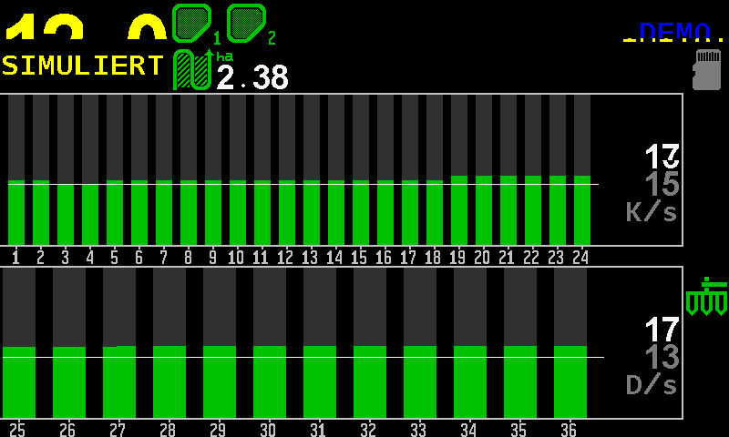
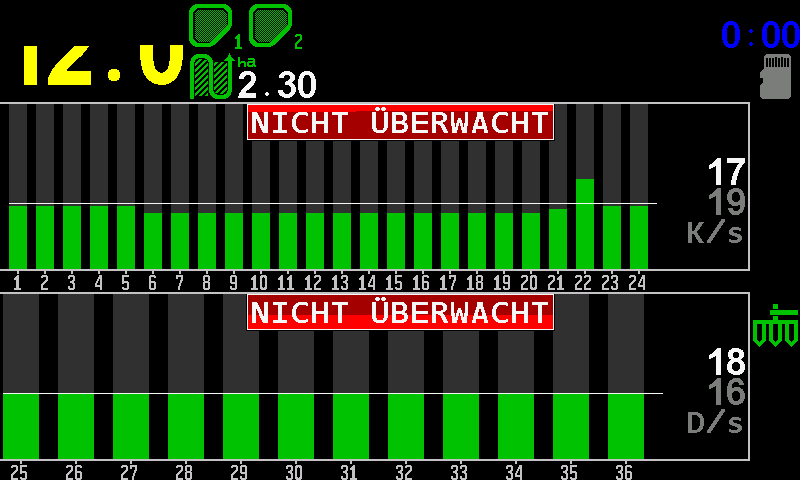

Das Sektionsdiagramm — Säulen, Linie und Farben
Wie Sie die Säulen des Startbildschirms im Modus „Einzelkorn“ und im Modus „Durchfluss“ lesen und was die Überwachungslinie bedeutet.
Jede Säule des Diagramms ist eine Sektion — ein Korn- oder Düngersensor. Ihre Höhe ist der Durchfluss durch diese Sektion. Wie der Rest gezeichnet wird, hängt vom Modus der Aussaatüberwachung ab: „Einzelkorn“ (Körner je Meter, mit Fehlstellen und Doppelbelegungen) oder „Durchfluss“ (Körner je Sekunde gegen eine Alarmschwelle).
Modus „Einzelkorn“

- Sollmenge. Grau, in Körnern je Meter (K/m). Diese Zahl ändern „PLUS“ und „MINUS“.
- Gemessene Menge. Weiß — der Durchschnitt der Reihen im Moment.
- Toleranz. Die zulässige Abweichung vom Sollwert in Prozent.
- Solllinie. Die Sollmenge, über alle Reihen gezogen.
- Obere Marke. Die obere Toleranzgrenze in jeder Säule.
- Untere Marke. Die untere Toleranzgrenze.
- Säule. Grün — die Reihe sät innerhalb der Toleranz.
- Fehlstellenbalken. Gelbe Schraffur am linken Rand einer Säule. Je höher sie ist, desto mehr Fehlstellen hat diese Reihe.
- Doppelbelegungsbalken. Blaue Schraffur am rechten Rand einer Säule. Je höher sie ist, desto mehr Doppelbelegungen.
- Sektionsnummer.
Modus „Durchfluss“

- Alarmschwelle. Grau, in Körnern je Sekunde (K/s). Das Niveau, unter dem eine Sektion als durchflussschwach gilt. „PLUS“ und „MINUS“ ändern es.
- Gemessene Menge. Weiß — der Durchschnitt der Reihen im Moment.
- Überwachungslinie. Die Alarmschwelle, über alle Reihen gezogen.
- Säule über der Linie. Grün — die Reihe arbeitet.
- Leerer Teil einer Säule. Dunkelgrau über dem Grün: Je höher das Grün reicht, desto mehr Durchfluss.
- Sektionsnummern. Die Düngersektionen setzen sich nach den Saatsektionen fort.
- Düngerdiagramm. Dasselbe für die Düngersensoren.
- Mengenfeld Dünger. Oben gemessen, darunter die Alarmschwelle, in Dünger je Sekunde (D/s).
Die Linie: Reihen darunter werden nicht überwacht
Die Linie ist die Grenze einer teilweisen Verstopfung, keine Verzierung. Eine Säule über der Linie ist eine Reihe, die arbeitet; eine Säule, die darunter sinkt, ist eine Reihe, die Durchfluss verliert — lange bevor sie ganz verstopft.

- „NICHT ÜBERWACHT“. Die Reihen dieses Diagramms werden nicht überwacht.
- Säulen unter der Linie. Jede Reihe liefert weniger als das Niveau.
- Überwachungslinie. Über den wirklichen Durchfluss hinaufgezogen.
- Alarmschwelle. 18 Körner je Sekunde — mehr, als die Maschine sät.
- Gemessene Menge. 15 Körner je Sekunde.
Reihen unter der Linie werden absichtlich nicht überwacht: Das Panel weigert sich, ein Niveau zu bewachen, das über dem eingestellt wurde, was die Maschine wirklich liefert. Senken Sie das Niveau, bis die Säulen über der Linie stehen, oder lassen Sie es das Panel setzen: Alarmschwelle automatisch einstellen.
Ob die Maschine überhaupt sät, entscheidet das Panel anhand des Anteils der säenden Reihen — eine Sensoreinstellung, ab Werk 20 %. Am Vorgewende fallen die Reihen aus der Überwachung; beim nächsten Durchgang kommen sie zurück, mit oder ohne Arbeitsstellungssensor. Das Panel meldet es mit Ton: drei kurze Signale, wenn die Aussaat aufhört, ein kurzes Signal, wenn sie wieder beginnt.
Was jede Farbe und jedes Symbol einer Säule bedeutet und welche vier Zustände eine Sektion hat: Säulenfarben und Sektionszustände.
Ihre Maschine tut etwas, das diese Seite nicht beantwortet? Schreiben Sie an support@agriwelt.com — es antwortet ein Ingenieur.